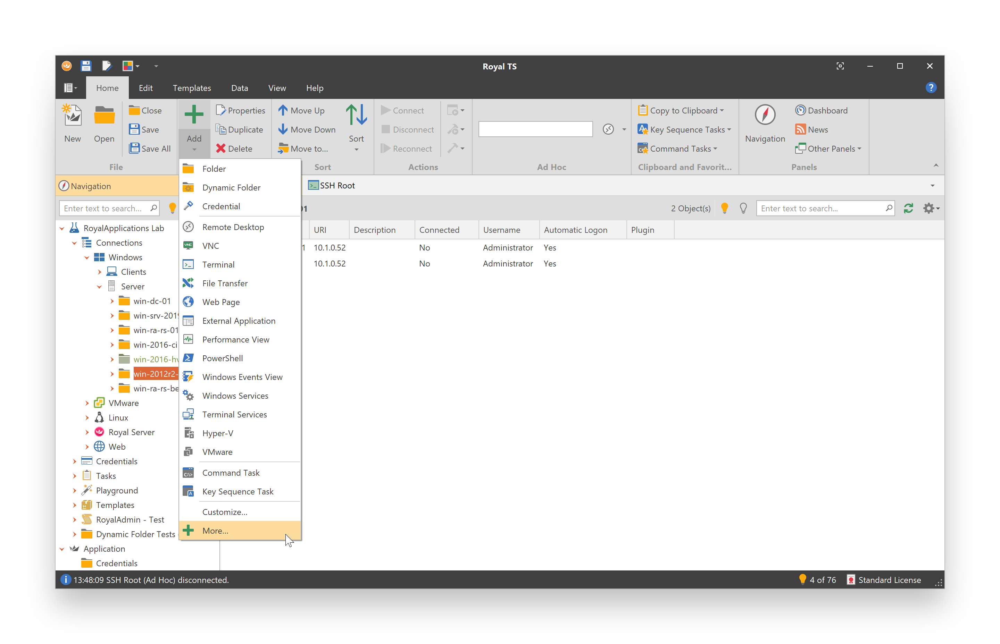

Connections
Before you can add a connection, you must create a new document or open an existing one. Although Royal TS supports multiple connection types (based on available plugins), they all have a common set of commands and features (like Connect, Disconnect, etc.).
Connection Types
Royal TS supports many different connection types. Click on the Add drop down button to see the most common connection types or click on More... to see all available object types:

You may also switch to the Edit tab and select the connection object you want to add. Use the Customize... command to configure which object types should appear in the Add drop down menu.
Tip
Selecting a connection type from the above options will create a new connection based on the Default Settings configured for the selected type. This means that all settings, including the setting to control which plugin to use for the connection, are taken from the Default Settings of the selected connection type. Navigate to the Default Settings folder in the Application document to adjust the defaults for each connection type.
Show all Object Types
Selecting the More... menu item displays a dialog where you can choose from all available object types including connections based on a specific plugin or based on a custom connection template:

See also: Plugins and Templates
Create a Connection
In this example, a Remote Desktop connection is created.
- In the Navigation panel, select a folder.
Note
You cannot create connections in the Application document. You need to create a new or open an existing one first. See also: Documents and Files
- On the Home tab, in the Edit group, click on the Add drop down button.
- Click on Remote Desktop in the drop down menu.
- Type a DNS name or IP address in the Computer Name box.
Click on the browse button (...) to open the Entry Editor dialog which also features a network browser dialog. The Entry Editor dialog can be used to search for computers in your network and to add multiple entries for different servers with the same settings at the same time. - Enter a name in the Display Name box.
- Optionally adjust additional settings. See also: Remote Desktop
- To add the connection and exit the dialog, click OK.
Tip
The default settings for new connections can be changed in the Default Settings folder in the Application document.
Connect to a Session
- In the Navigation panel, select a connection.
By default, the Dashboard is shown when an inactive connection is selected. The remote desktop connection dashboard offers a specialized view for terminal sessions and Hyper-V instances (depending on the configuration). - On the Home tab, in the Actions group, click on Connect.
You may also double-click a connection or use the context menu to Connect, depending on your Behavior configuration. - A new tab for the session is created.
Disconnect a Session
- In the Navigation panel, select the connection to disconnect.
- On the Actions tab, in the Common Actions group, click on Disconnect.
- You can also find the Disconnect command on the Home tab, in the Actions group.
- You may also double-click on a connected session in the Navigation panel to disconnect your session, depending on your Behavior configuration.
- The connection tab will be closed and the Dashboard will be selected.